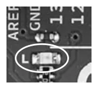
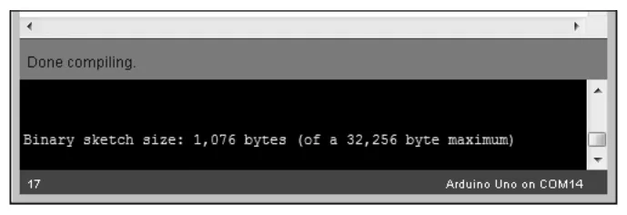
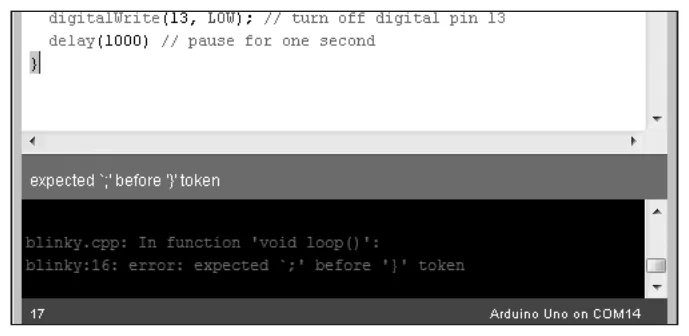

An Arduino sketch is a set of instructions that you create to accomplish a particular task; in other words, a sketch is a program. In this section you’ll create and upload a simple sketch that will cause the Arduino’s LED (shown in Figure 2-11) to blink repeatedly, by turning it on and then off for 1 second intervals.

To begin, connect your Arduino to the computer with the USB cable. Then open the IDE, choose Tools4Serial Port, and make sure the USB port is selected. This ensures that the Arduino board is properly connected.
Comments
First, enter a comment as a reminder of what your sketch will be used for. A comment is a note of any length in a sketch, written for the user’s benefit. Comments in sketches are useful for adding notes to yourself or others, for entering instructions, or for noting miscellaneous details. When program-ming your Arduino (creating sketches), it’s a good idea to add comments regarding your intentions; these comments can prove useful later when you’re revisiting a sketch.
To add a comment on a single line, enter two forward slashes and then the comment, like this:
// Blink LED sketch by Mary Smith, created 09/09/12The two forward slashes tell the IDE to ignore the text that follows when verifying a sketch. (As mentioned earlier, when you verify a sketch, you’re asking the IDE to check that everything is written properly with no errors.)
To enter a comment that spans two or more lines, enter the characters /* on a line before the comment, and then end the comment with the characters */ on the following line, like this:
/*
Arduino Blink LED Sketch
by Mary Smith, created 09/09/12
*/As with the two forward slashes that precede a single line comment, the /* and */ tell the IDE to ignore the text that they bracket.
Enter a comment describing your Arduino sketch using one of these methods, and then save your sketch by choosing File4Save As. Enter a short name for your sketch (such as blinky), and then click OK.
The default filename extension for Arduino sketches is .ino, and the IDE should add this automatically. The name for your sketch should be, in this case, blinky.ino, and you should be able to see it in your Sketchbook.
The Setup Function
The next stage in creating any sketch is to add the void setup() function. This function contains a set of instructions for the Arduino to execute once only, each time it is reset or turned on. To create the setup function, add the following lines to your sketch, after the comments:
void setup()
{
}Controlling the Hardware
Our program will blink the user LED on the Arduino. The user LED is connected to the Arduino’s digital pin 13. A digital pin can either detect an electrical signal or generate one on command. In this project, we’ll generate an electrical signal that will light the LED. This may seem a little complicated, but you’ll learn more about digital pins in future chapters. For now, just continue with creating the sketch.
Enter the following into your sketch between the braces ({ and }):
pinMode(13, OUTPUT); // set digital pin 13 to outputThe number 13 in the listing represents the digital pin you’re addressing. You’re setting this pin to OUTPUT, which means it will generate (output) an electrical signal. If you wanted it to detect an incoming electrical signal, then you would use INPUT instead. Notice that the function pinMode() ends with a semi colon (;). Every function in your Arduino sketches will end with a semicolon.
Save your sketch again to make sure that you don’t lose any of your work.
The Loop Function
Remember that our goal is to make the LED blink repeatedly. To do this, we’ll create a loop function to tell the Arduino to execute an instruction over and over until the power is shut off or someone presses the RESET button.
Enter the code shown in boldface after the void setup() section in the following listing to create an empty loop function. Be sure to end this new section with another brace (}), and then save your sketch again.
/*
Arduino Blink LED Sketch
by Mary Smith, created 09/09/12
*/
void setup()
{
pinMode(13, OUTPUT); // set digital pin 13 to output
}
void loop()
{
// place your main loop code here:
}Next, enter the actual functions into void loop() for the Arduino to execute.
Enter the following between the loop function’s braces, and then click Verify to make sure that you’ve entered everything correctly:
digitalWrite(13, HIGH); // turn on digital pin 13
delay(1000); // pause for one second
digitalWrite(13, LOW); // turn off digital pin 13
delay(1000); // pause for one secondLet’s take this all apart. The digitalWrite() function controls the voltage that is output from a digital pin: in this case, pin 13 to the LED. By setting the second parameter of this function to HIGH, a “high” digital voltage is output; then current will flow from the pin and the LED will turn on. (If you were to set this parameter to LOW, then the current flowing through the LED would stop.)
With the LED turned on, the light pauses for 1 second with delay(1000). The delay() function causes the sketch to do nothing for a period of time—in this case, 1,000 milliseconds, or 1 second.
Next, we turn off the voltage to the LED with digitalWrite(13, LOW);. Finally, we pause again for 1 second while the LED is off, with delay(1000);.
The completed sketch should look like this:
/*
Arduino Blink LED Sketch
by Mary Smith, created 09/09/12
*/
void setup()
{
pinMode(13, OUTPUT); // set digital pin 13 to output
}
void loop()
{
digitalWrite(13, HIGH); // turn on digital pin 13
delay(1000); // pause for one second
digitalWrite(13, LOW); // turn off digital pin 13
delay(1000); // pause for one second
}Before you do anything further, save your sketch!
Verifying Your Sketch
When you verify your sketch, you ensure that it has been written correctly in a way that the Arduino can understand. To verify your complete sketch, click Verify in the IDE and wait a moment. Once the sketch has been verified, a note should appear in the message window, as shown in Figure 2-12.

This “Done compiling” message tells you that the sketch is okay to upload to your Arduino. It also shows how much memory it will use (1,076 bytes in this case) of the total available on the Arduino (32,256 bytes).
But what if your sketch isn’t okay? Say, for example, you forgot to add a semicolon at the end of the second delay(1000) function. If something is broken in your sketch, then when you click Verify, the message window should display a verification error message similar to the one shown in Figure 2-13.

The message tells you that the error occurs in the void loop function, lists the line number of the sketch where the IDE thinks the error is located (blinky:16, or line 16 of your blinky sketch), and displays the error itself (the missing semicolon, error: expected ';' before '}' token). Furthermore, the IDE should also highlight in yellow the location of the error or a spot just after it. This helps you easily locate and rectify the mistake.
Uploading and Running Your Sketch
Once you’re satisfied that your sketch has been entered correctly, save it, ensure that your Arduino board is connected, and click Upload in the IDE. The IDE may verify your sketch again and then upload it to your Arduino board. During this process, the TX/RX LEDs on your board (shown in Figure 2-6) should blink, indicating that information is traveling between the Arduino and your computer.
Now for the moment of truth: Your Arduino should start running the sketch. If you’ve done everything correctly, then the LED should blink on and off once every second!
Congratulations. You now know the basics of how to enter, verify, and upload an Arduino sketch.
Modifying Your Sketch
After running your sketch, you may want to change how it operates, by, for example, adjusting the on or off delay time for the LED. Because the IDE is a lot like a word processor, you can open your saved sketch, adjust the values, and then save your sketch again and upload it to the Arduino. For example, to increase the rate of blinking, change both delay functions to make the LEDs blink for one-quarter of a second by adjusting the delay to 250 like this:
delay(250); // pause for one-quarter of one secondThen upload the sketch again. The LED should now blink faster, for one-quarter of a second each time.